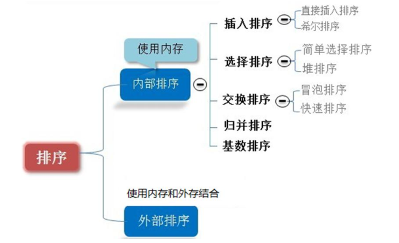
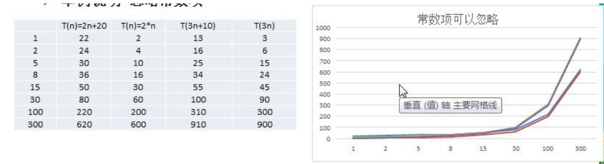
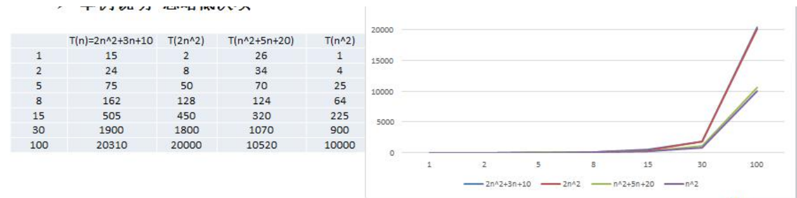
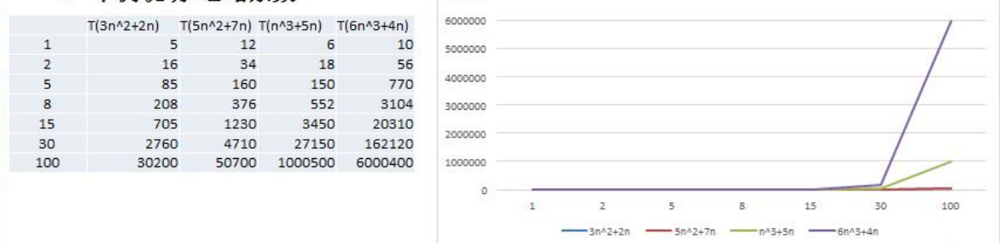
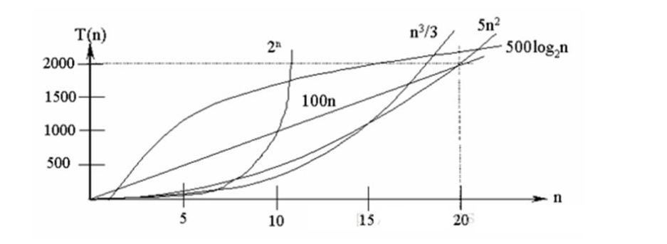

排序算法的介绍
排序也称排序算法(SortAlgorithm)，排序是将 一组数据，依 指定的顺序进行 排列的过程。
相关术语解释：
- 稳定：如果 a 原本在 b 前面，而 a=b，排序之后 a 仍然在 b 的前面；
- 不稳定：如果 a 原本在 b 的前面，而 a=b，排序之后 a 可能会出现在 b 的后面；
- 内排序：所有排序操作都在内存中完成；
- 外排序：由于数据太大，因此把数据放在磁盘中，而排序通过磁盘和内存的数据传输才能进行；
- 时间复杂度： 一个算法执行所耗费的时间。
- 空间复杂度：运行完一个程序所需内存的大小。
- n: 数据规模
- k: “桶”的个数
- In-place: 不占用额外内存
- Out-place: 占用额外内存
排序的分类：
- 内部排序:
指将需要处理的所有数据都加载到 内部存储器( 内存)中进行排序。 - 外部排序法：
数据量过大，无法全部加载到内存中，需要借助 外部存储( 文件等)进行排序。 - 常见的排序算法分类

算法的时间复杂度
度量一个程序(算法)执行时间的两种方法
事后统计的方法
这种方法可行, 但是有两个问题：一是要想对设计的算法的运行性能进行评测，需要实际运行该程序；二是所
得时间的统计量依赖于计算机的硬件、软件等环境因素, 这种方式，要在同一台计算机的相同状态下运行，才能比较那个算法速度更快。
事前估算的方法
通过分析某个算法的 时间复杂度来判断哪个算法更优.
时间频度
基本介绍
时间频度：一个算法花费的时间与算法中语句的执行次数成正比例，哪个算法中语句执行次数多，它花费时间
就多。 一个算法中的语句执行次数称为语句频度或时间频度。记为 T(n)
举例说明-基本案例
比如计算 1-100 所有数字之和, 我们设计两种算法：
1 | int total = 0; |
举例说明-忽略常数项

结论:
- 2n+20 和 2n 随着 n 变大，执行曲线无限接近, 20 可以忽略
- 3n+10 和 3n 随着 n 变大，执行曲线无限接近, 10 可以忽略
举例说明-忽略低次项

结论:
- 2n^2+3n+10 和 2n^2 随着 n 变大, 执行曲线无限接近, 可以忽略 3n+10
- n^2+5n+20 和 n^2 随着 n 变大,执行曲线无限接近, 可以忽略 5n+20
举例说明-忽略系数

结论:
- 随着 n 值变大，5n^2+7n 和 3n^2 + 2n ，执行曲线重合, 说明 这种情况下, 5 和 3 可以忽略。
- 而 n^3+5n 和 6n^3+4n ，执行曲线分离，说明多少次方式关键
时间复杂度
- 一般情况下， 算法中的基本操作语句的重复执行次数是问题规模 n 的某个函数，用 T(n)表示，若有某个辅
助函数 f(n)，使得当 n 趋近于无穷大时，T(n) / f(n) 的极限值为不等于零的常数，则称 f(n)是 T(n)的同数量级函数。记作 T(n)= Ｏ( f(n) )，称Ｏ( f(n) ) 为算法的渐进时间复杂度，简称时间复杂度。 - T(n) 不同，但时间复杂度可能相同。 如：T(n)=n²+7n+6 与 T(n)=3n²+2n+2 它们的 T(n) 不同，但时间复杂
度相同，都为 O(n² ²)。 - 计算时间复杂度的方法：
- 用常数 1 代替运行时间中的所有加法常数 T(n)=n²+7n+6 => T(n)=n²+7n+1
- 修改后的运行次数函数中，只保留最高阶项 T(n)=n²+7n+1 => T(n) = n²
- 去除最高阶项的系数 T(n) = n² => T(n) = n² => O(n²)
常见的时间复杂度
- 常数阶 O(1)
- 对数阶 O(log2n)
- 线性阶 O(n)
- 线性对数阶 O(nlog2n)
- 平方阶 O(n^2)
- 立方阶 O(n^3)
- k 次方阶 O(n^k)
- 指数阶 O(2^n)

说明：
- 常见的算法时间复杂度由小到大依次为：Ο(1)＜Ο(log2n)＜Ο(n)＜Ο(nlog2n)＜Ο(n^2)＜Ο(n^3)＜ Ο(n^k) ＜ Ο(2^n) ，随着问题规模 n 的不断增大，上述时间复杂度不断增大，算法的执行效率越低
- 从图中可见，我们应该尽可能避免使用指数阶的算法
算法的空间复杂度简介
基本介绍
- 类似于时间复杂度的讨论，一个算法的空间复杂度(Space Complexity)定义为该算法所耗费的存储空间，它也是问题规模 n 的函数。
- 空间复杂度(Space Complexity)是对一个算法在运行过程中临时占用存储空间大小的量度。有的算法需要占用的临时工作单元数与解决问题的规模 n 有关，它随着 n 的增大而增大，当 n 较大时，将占用较多的存储单元，例如快速排序和 归并排序算法, 基数排序就属于这种情况。
- 在做算法分析时，主要讨论的是时间复杂度。 从用户使用体验上看 ， 更看重的程序执行的速度。一些缓存产品(redis, memcache)和算法(基数排序)
八种排序算法的时间复杂度
1、稳定性
归并排序、冒泡排序、插入排序。基数排序是稳定的
选择排序、快速排序、希尔排序、堆排序是不稳定的
2、时间复杂度
最基础的四个算法：冒泡、选择、插入、快排中，快排的时间复杂度最小O(n*log2n)，其他都是O（n2）
| 排序法 | 平均时间 | 最差情形 | 稳定度 | 额外空间 | 备注 |
|---|---|---|---|---|---|
| 冒泡 | O(n2) | O(n2) | 稳定 | O(1) | n小时较好 |
| 交换 | O(n2) | O(n2) | 不稳定 | O(1) | n小时较好 |
| 选择 | O(n2) | O(n2) | 不稳定 | O(1) | n小时较好 |
| 插入 | O(n2) | O(n2) | 稳定 | O(1) | 大部分已排序时较好 |
| 基数 | O(logRB) | O(logRB) | 稳定 | O(n) | B是真数(0-9)，R是基数(个十百) |
| Shell | O(nlogn) | O(ns) 1<s<2 | 不稳定 | O(1) | s是所选分组 |
| 快速 | O(nlogn) | O(n2) | 不稳定 | O(nlogn) | n大时较好 |
| 归并 | O(nlogn) | O(nlogn) | 稳定 | O(1) | n大时较好 |
| 堆 | O(nlogn) | O(nlogn) | 不稳定 | O(1) | n大时较好 |
3.排序算法的思想：
(1)冒泡排序：
是相邻元素之间的比较和交换，两重循环O(n2)；所以，如果两个相邻元素相等，是不会交换的。所以它是一种稳定的排序方法
(2)选择排序：
每个元素都与第一个元素相比，产生交换，两重循环O(n2)；举个栗子，5 8 5 2 9，第一遍之后，2会与5交换，那么原序列中两个5的顺序就被破坏了。所以不是稳定的排序算法
(3)插入排序：
插入排序是在一个已经有序的小序列的基础上，一次插入一个元素。刚开始这个小序列只包含第一个元素，事件复杂度O(n2)。比较是从这个小序列的末尾开始的。想要插入的元素和小序列的最大者开始比起，如果比它大则直接插在其后面，否则一直往前找它该插入的位置。如果遇见了一个和插入元素相等的，则把插入元素放在这个相等元素的后面。所以相等元素间的顺序没有改变，是稳定的。
(4)快速排序
快速排序有两个方向，左边的i下标一直往右走，当a[i] <= a[center_index]，其中center_index是中枢元素的数组下标，一般取为数组第0个元素。而右边的j下标一直往左走，当a[j] > a[center_index]。如果i和j都走不动了，i <= j, 交换a[i]和a[j],重复上面的过程，直到i>j。 交换a[j]和a[center_index]，完成一趟快速排序。在中枢元素和a[j]交换的时候，很有可能把前面的元素的稳定性打乱，比如序列为 5 3 3 4 3 8 9 10 11， 现在中枢元素5和3(第5个元素，下标从1开始计)交换就会把元素3的稳定性打乱，所以快速排序是一个不稳定的排序算法，不稳定发生在中枢元素和a[j]交换的时刻。
(5)归并排序
归并排序是把序列递归地分成短序列，递归出口是短序列只有1个元素(认为直接有序)或者2个序列(1次比较和交换),然后把各个有序的段序列合并成一个有序的长序列，不断合并直到原序列全部排好序。可以发现，在1个或2个元素时，1个元素不会交换，2个元素如果大小相等也没有人故意交换，这不会破坏稳定性。那么，在短的有序序列合并的过程中，稳定是是否受到破坏？没有，合并过程中我们可以保证如果两个当前元素相等时，我们把处在前面的序列的元素保存在结果序列的前面，这样就保证了稳定性。所以，归并排序也是稳定的排序算法。
(6)基数排序
基数排序是按照低位先排序，然后收集；再按照高位排序，然后再收集；依次类推，直到最高位。有时候有些属性是有优先级顺序的，先按低优先级排序，再按高优先级排序，最后的次序就是高优先级高的在前，高优先级相同的低优先级高的在前。基数排序基于分别排序，分别收集，所以其是稳定的排序算法。
(7)希尔排序(shell)
希尔排序是按照不同步长对元素进行插入排序，当刚开始元素很无序的时候，步长最大，所以插入排序的元素个数很少，速度很快；当元素基本有序了，步长很小，插入排序对于有序的序列效率很高。所以，希尔排序的时间复杂度会比o(n^2)好一些。由于多次插入排序，我们知道一次插入排序是稳定的，不会改变相同元素的相对顺序，但在不同的插入排序过程中，相同的元素可能在各自的插入排序中移动，最后其稳定性就会被打乱，所以shell排序是不稳定的。
(8)堆排序
我们知道堆的结构是节点i的孩子为2i和2i+1节点，大顶堆要求父节点大于等于其2个子节点，小顶堆要求父节点小于等于其2个子节点。在一个长为n的序列，堆排序的过程是从第n/2开始和其子节点共3个值选择最大(大顶堆)或者最小(小顶堆),这3个元素之间的选择当然不会破坏稳定性。但当为n/2-1, n/2-2, …1这些个父节点选择元素时，就会破坏稳定性。有可能第n/2个父节点交换把后面一个元素交换过去了，而第n/2-1个父节点把后面一个相同的元素没有交换，那么这2个相同的元素之间的稳定性就被破坏了。所以，堆排序不是稳定的排序算法